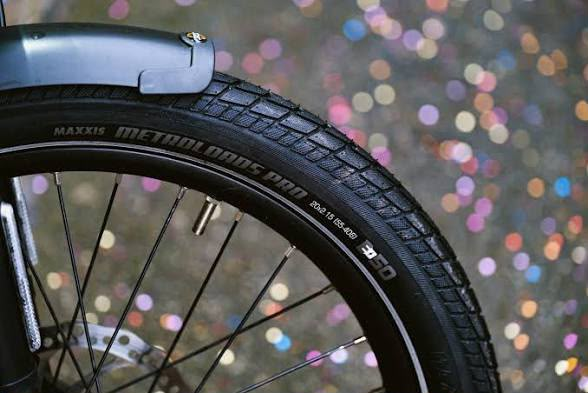
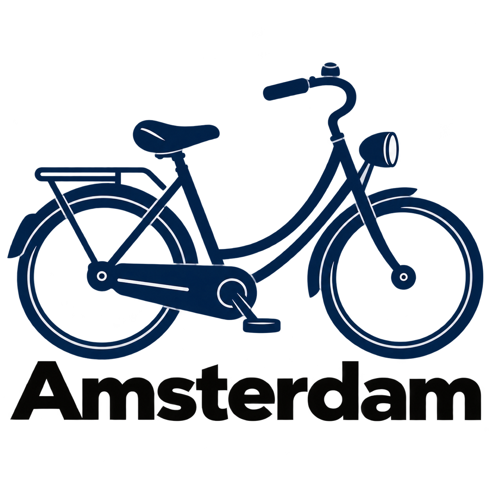
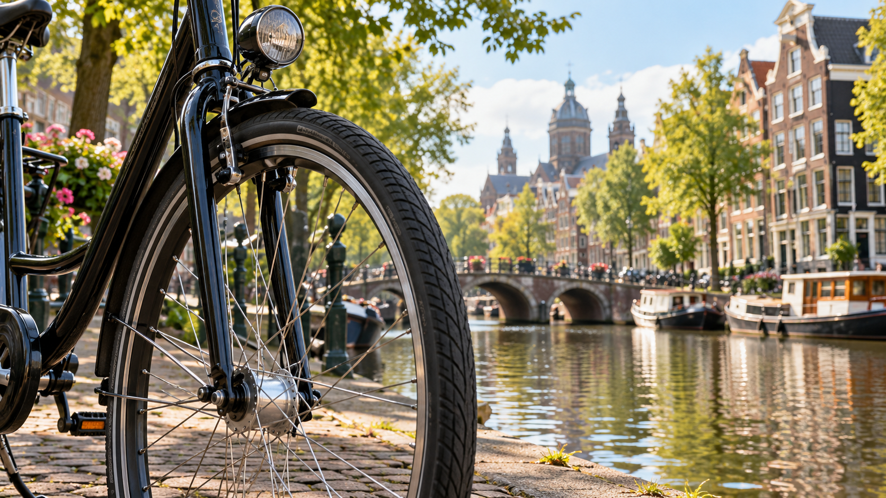
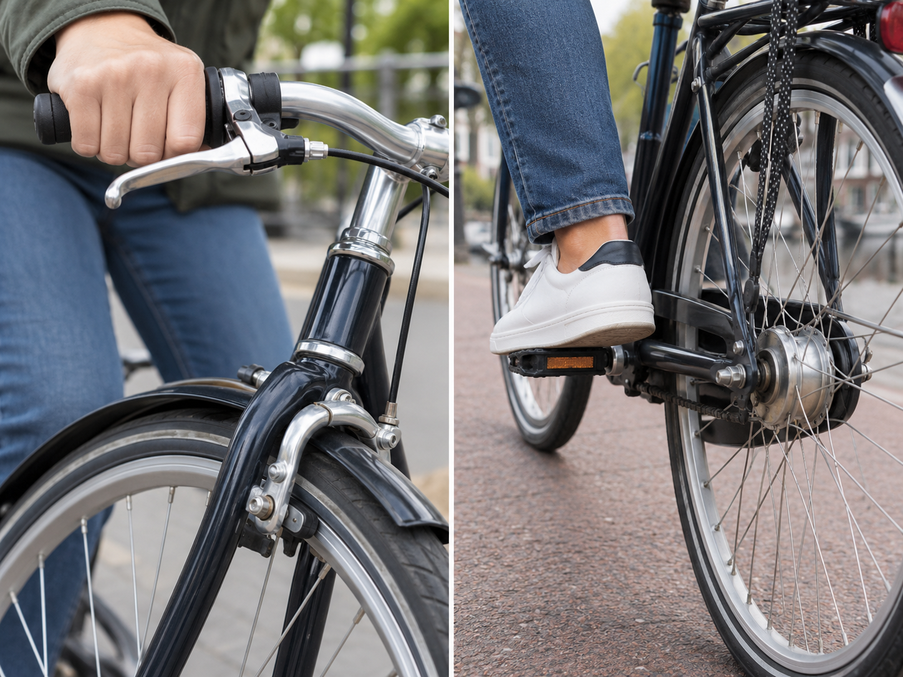
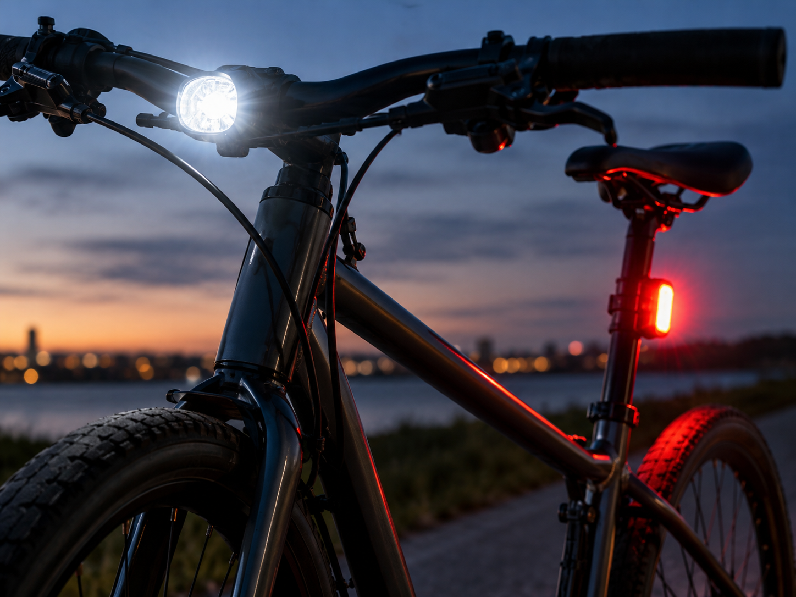

Tires:
Check both tires before your ride. Make sure they have enough air and look for any damage, cracks, or objects stuck in them. Good tires can make your ride more comfortable and help you control the bike.


Before you start cycling in Amsterdam, take a few minutes to check your bike. A quick check can help you find problems before you get on the road. You do not need to be a bike expert. Just look at the most important parts and make sure everything works properly.

Check both tires before your ride. Make sure they have enough air and look for any damage, cracks, or objects stuck in them. Good tires can make your ride more comfortable and help you control the bike.

Test the brakes before you start riding. Make sure both brakes work properly and can stop the bike. If the brakes feel weak or do not work, do not start your ride until the problem is fixed.

Check the front and back lights, especially when you are cycling in the evening or at night. Make sure they work properly and are easy for the other road users to see.